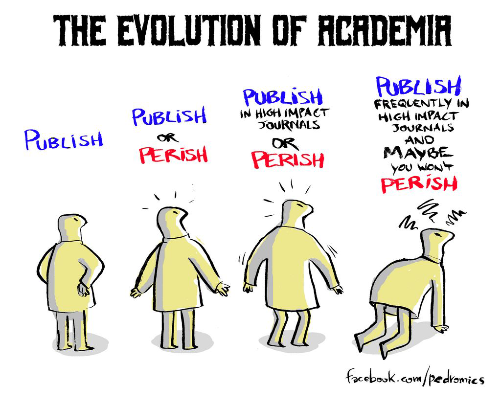

<!doctype html>
<html>
<head>
<meta charset="utf-8">
<meta name="viewport" content="width=device-width, initial-scale=1.0, maximum-scale=1.0, user-scalable=no">

<title>reveal.js</title>

<link rel="stylesheet" href="css/reset.css">
<link rel="stylesheet" href="css/reveal.css">
<link rel="stylesheet" href="css/theme/sysAI.css">

<!-- Theme used for syntax highlighting of code -->
<link rel="stylesheet" href="lib/css/zenburn.css">

<!-- Printing and PDF exports -->
<script>
var link = document.createElement( 'link' );
link.rel = 'stylesheet';
link.type = 'text/css';
link.href = window.location.search.match( /print-pdf/gi ) ? 'css/print/pdf.css' : 'css/print/paper.css';
document.getElementsByTagName( 'head' )[0].appendChild( link );
</script>
</head>
<body>
<div class="reveal">
<div class="slides">

<section data-markdown data-separator="-s-" data-separator-vertical="----" data-separator-notes="^Note:">
<script type="text/template">

<!-- .slide: id="red-slide"  -->
<!-- .slide: data-background="#ffffff" data-transition="zoom" -->
# Week 02 
## From Reproducible to Replicable research

----

<!-- .slide: data-transition="fade-in slide-out" -->

# What's on the agenda today 

RULES FOR CREATING REPRODUCIBLE DATA SCIENCE

----
<!-- .slide: data-background="img/background-01.png" -->
<!-- .slide: data-transition="fade-in slide-out" -->

<div style="width: 90%;margin: 0;background-color: rgba(255,255,255,0.5);color:black;">
<p> The prickly pear has a thick skin that conceals a sweet, softer interior. In other words, this session is an
    informal space. 
    Please feel free to interrupt me whenever you have a question, or if you think you can contribute something
    to the discussion.</p> 
</div>

----

<!-- .slide: data-background="img/marshmellow.png" -->
<!-- .slide: data-transition="fade-in slide-out" -->

----
<h1> Why do we have the replication crisis?</h1> 
 

----
<h1> Why Most Published Research Findings</h1> 
<h1> Are False</h1> 
 

----
## Why Most Published Research Findings Are False*

- Studies rely on questionable research practices
- Sample Sizes are too small to justify conclusion
- p-hacking: running too many statistical tests and only reporting the good ones

> [*2005 John P. A. Ioannidis]('https://journals.plos.org/plosmedicine/article?id=10.1371/journal.pmed.0020124&xid=17259,15700019,15700186,15700190,15700248')
----

## What can we do?

- A better understanding of reproducibility practices

----
## What can we do?

- More reliable data sources with less experiments
   - Aim for larger sample sizes with more angles
   - Transparency in protocol

----
## What can we do?

- Incorporate pre registration of individual analyses


----
## Open Science Practices and Metadata

- Be transparent about your study
- When possible, share raw data
- To share sensitive data, you may be able to use synthetic data reflecting some of the original data complexity
- Share code in a reusable format that is easy to understand 
- Consider using package manger to share your code
- Or some container  

----

<!-- .slide: data-transition="fade-in" -->
<!-- .slide: data-background="#ffffff" data-transition="zoom" -->
# Different levels of Reproducibility
<div class="centered_image">
    
</div>

- Reproducible: A result is computationally reproducible when the same analysis steps performed on the same dataset consistently produces the same answer.


[source:the-turing-way]('https://the-turing-way.netlify.app/reproducible-research/overview/overview-definitions#table-of-definitions-for-reproducibility')
----
<!-- .slide: data-background="https://i2.pickpik.com/photos/110/568/870/files-ddr-archive-preview.jpg" -->
<div style="width: 90%;margin: 0;background-color: rgba(255,255,255,0.5);color:black;">
    <p>
        <h1 style="color:black"> RULE #1 </h1>
        <h2 style="color:black"> FOR EVERY RESULT, KEEP TRACK OF HOW IT WAS PRODUCED <h2>
    </p>
</div>

---- 
# RULE #1
## FOR EVERY RESULT, KEEP TRACK OF HOW IT WAS PRODUCED

Knowing how you went from the raw data to the conclusion allows you to:

- defend the results
- update the results if errors are found
- reproduce the results when data is updated


----
<!-- .slide: data-background="https://i1.pickpik.com/photos/373/813/306/heavy-hard-work-hard-work-preview.jpg" -->
<div style="width: 90%;margin: 0;background-color: rgba(255,255,255,0.5);color:black;">
    <p>
        <h1 style="color:black"> RULE #2 </h1>
        <h2 style="color:black"> AVOID MANUAL DATA MANIPULATION STEPS <h2>
    </p>
</div>

----

# RULE #2
## AVOID MANUAL DATA MANIPULATION STEPS

- Sometimes it is far easier to open data files in an editor (did anyone say excel?) and manually clean up a couple of formatting errors or remove an outlier. 
- It si also easy to cut and paste between applications. 
- This temptation to use manual work instead of scripting should be resisted. 
- Manual data manipulation is hidden manipulation.
----
<!-- .slide: data-background="https://p0.piqsels.com/preview/60/688/850/business-office-graphic-designer-planning-thumbnail.jpg" -->
<div style="width: 90%;margin: 0;background-color: rgba(255,255,255,0.5);color:black;">
    <p>
        <h1 style="color:black"> RULE #3 </h1>
        <h2 style="color:black"> ARCHIVE THE EXACT VERSIONS OF ALL EXTERNAL PROGRAMS USED <h2>
    </p>
</div>
----
# RULE #3
## ARCHIVE THE EXACT VERSIONS OF ALL EXTERNAL PROGRAMS USED

- Document the edition and version of all the software used
- Operating system used 
- Hardware in special cases 

----
<!-- .slide: data-background="https://blog.k.io/attachment/f1224b44-d27f-4e45-8a49-47fb68f9c862/thumb1400.jpg" -->
<div style="width: 90%;margin: 0;background-color: rgba(255,255,255,0.5);color:black;">
    <p>
        <h1 style="color:black"> RULE #4 </h1>
        <h2 style="color:black"> VERSION CONTROL ALL CUSTOM SCRIPTS <h2>
    </p>
</div>
----

# RULE #4
## VERSION CONTROL ALL CUSTOM SCRIPTS

- A version control system, (e.g. Git), should be used to track the evolution of your code.

----
<!-- .slide: data-background="https://miro.medium.com/max/3200/1*SwXkSz05zb7_kCPQ4dhPug.jpeg" -->
<div style="width: 90%;margin: 0;background-color: rgba(255,255,255,0.5);color:black;">
    <p>
        <h1 style="color:black"> RULE #5 </h1>
        <h2 style="color:black"> RECORD ALL INTERMEDIATE RESULTS, WHEN POSSIBLE IN STANDARDIZED FORMATS <h2>
    </p>
</div>

----

#  RULE #5
## RECORD ALL INTERMEDIATE RESULTS, WHEN POSSIBLE IN STANDARDIZED FORMATS
- In principle, as long as you kept raw data, all intermediate steps can also be recreated
- In practice, intermediate results are useful at least at the exploratory stage of the analysis.

----
<!-- .slide: data-background="https://miro.medium.com/max/3840/1*M70VAAHkWsq23ifZLIVpLw.jpeg" -->
<div style="width: 90%;margin: 0;background-color: rgba(255,255,255,0.5);color:black;">
    <p >
<h1 style="color:black"> RULE #6 </h1>
<h2 style="color:black"> FOR ANALYSES THAT INCLUDE RANDOMNESS, NOTE UNDERLYING RANDOM SEEDS <h2>
</p>
</div>
----

# RULE #6
## FOR ANALYSES THAT INCLUDE RANDOMNESS, NOTE UNDERLYING RANDOM SEEDS

- Almost all machine learning algorithms have some stochastic element 
- This is also central for non parametric analysis 
- Even if your robust results are statistically reproducible, being able to reproduce the exact numbers produced by someone else - is key.

----
<!-- .slide: data-background="img/repo-07.png" -->
<div style="width: 90%;margin: 0;background-color: rgba(255,255,255,0.5);color:black;">
    <p>
        <h1 style="color:black"> RULE #7 </h1>
        <h2 style="color:black"> ALWAYS STORE RAW DATA BEHIND PLOTS <h2>
    </p>
</div>
----
# RULE #7 
## ALWAYS STORE RAW DATA BEHIND PLOTS

- Automatically generate plots using code!!!
- Figures will constantly change up until you present results.
- If raw data is accessible, you can just change how you communicate it instead of what you communicate.
- This is also a good habit to have when working with someone else

----
<!-- .slide: data-background="https://c1.wallpaperflare.com/preview/331/516/975/water-plant-green-fine-layers.jpg" -->
<div style="width: 90%;margin: 0;background-color: rgba(255,255,255,0.5);color:black;">
    <p>
        <h1 style="color:black"> RULE #8 </h1>
        <h2 style="color:black"> GENERATE HIERARCHICAL ANALYSIS OUTPUT, ALLOWING LAYERS OF INCREASING DETAIL TO BE INSPECTED <h2>
    </p>
</div>
----
# RULE #8
## GENERATE HIERARCHICAL ANALYSIS OUTPUT, ALLOWING LAYERS OF INCREASING DETAIL TO BE INSPECTED

- As scientists, our goal is to summarize results in some form. 
- That is a key step in communicating results. 
- However, summarizing data involves losing information 
- It is also an easy way to misuse data 
- For each summary result, have a link to the data used to calculate the summary.

----
<!-- .slide: data-background="https://i.pinimg.com/originals/a0/f3/81/a0f381ead8a60dfe88bbf1ddc414708b.png" -->
<div style="width: 90%;margin: 0;background-color: rgba(255,255,255,0.5);color:black;">
    <p>
        <h1 style="color:black"> RULE #9 </h1>
        <h2 style="color:black"> CONNECT TEXTUAL STATEMENTS TO UNDERLYING RESULTS <h2>
    </p>
</div>
----
# RULE #9
## CONNECT TEXTUAL STATEMENTS TO UNDERLYING RESULTS

- Data analysis results are commonly presented as a report containing words and images.
- The link between analysis and interpretations is not always straight forward. 
- Therefore it’s essential that the report of a study be linked back to the results. 
- And because of Rule #1, all the way back to the raw data.
- This can be achieved, by using...

----
<!-- .slide: data-background="https://business.blogthinkbig.com/wp-content/uploads/sites/2/2019/04/Figura1LogoJupyter.png" -->

----
<!-- .slide: data-background="https://p1.piqsels.com/preview/915/529/243/keyboard-button-key-entering-input-internet.jpg" -->
<div style="width: 90%;margin: 0;background-color: rgba(255,255,255,0.5);color:black;">
    <p>
        <h1 style="color:black"> RULE #10 </h1>
        <h2 style="color:black"> PROVIDE PUBLIC ACCESS TO SCRIPTS, RUNS, AND RESULTS <h2>
    </p>
</div>
----
# RULE #10
## PROVIDE PUBLIC ACCESS TO SCRIPTS, RUNS, AND RESULTS

- Open version control systems, such as GitLab and GitHub, allow the creation of both private and public repositories 
- Private repositories can be accessed by authorized colleagues.
- public repositories can be accessed by anyone with a computer.
- More eyes on your analysis leads to less mistakes 
- So the more you share, the better your analyses are likely to be.

-s-
# Tell us what you thought about todays session!
----
<!-- .slide: data-background="https://live.staticflickr.com/3675/9436653177_fd00cc9d2c_b.jpg" -->
<div style="width: 90%;margin: 0;background-color: rgba(255,255,255,0.5);color:black;">
    <p>
        <h2 style="color:black"> We need feedback to get better <h2>
    </p>
</div>
----

----
# Any Questions? 


</script>
</section>


</div>
</div>

<script src="js/reveal.js"></script>
<script src="js/config.js"></script>

<script>
window.onload=function(){function a(a,b){var c=/^(?:file):/,d=new
XMLHttpRequest,e=0;d.onreadystatechange=function(){4==d.readyState&&(e=d.status),c.test(location.href)&&d.responseText&&(e=200),4==d.readyState&&200==e&&(a.outerHTML=d.responseText)};try{d.open("GET",b,!0),d.send()}catch(f){}}var
b,c=document.getElementsByTagName("*");for(b in
c)c[b].hasAttribute&&c[b].hasAttribute("data-include")&&a(c[b],c[b].getAttribute("data-include"))};
</script>	
</body>

</html>
